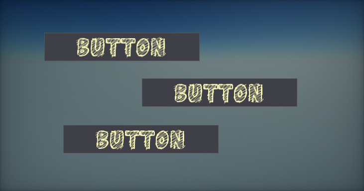
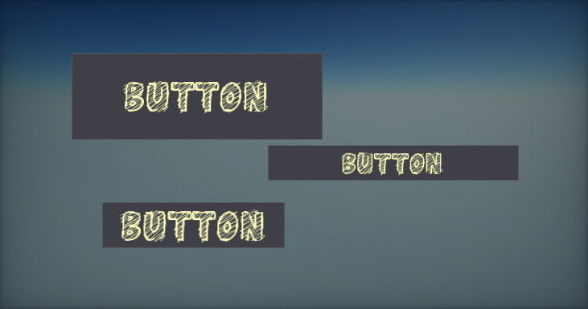
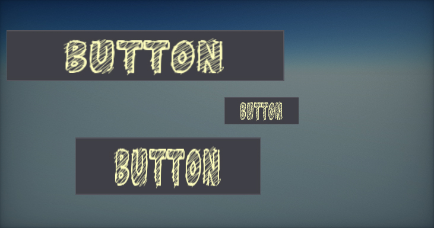
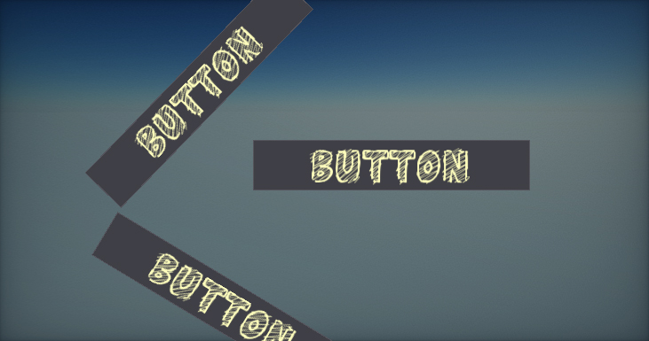
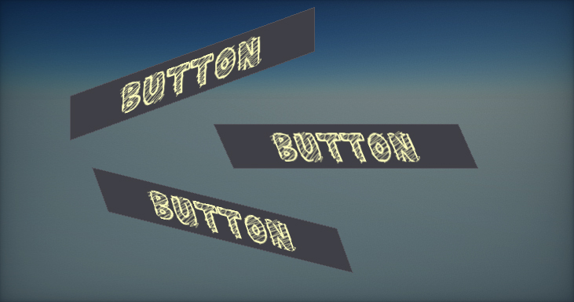
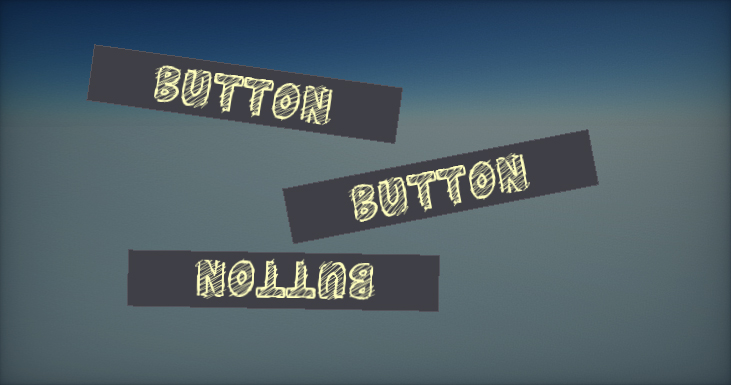

Control Transform
Every GUI control contains a set of properties related to transforming the control within the parent container. Every control location can be assigned and fixed or depend on the parent container control's dimensions. Use the properties group Transform when editing selected UI Control in the editor to adjust its appearance. All these options can be also modified at runtime from C# code.
Location
The location of the upper-left corner of the control relative to the upper-left corner of its container.

Size
The size of the control bounds.

Scale
The control scale parameter.

Pivot
The control rotation pivot location in normalized control size. Point (0,0) is upper left corner, (0.5,0.5) is center, (1,1) is bottom left corner.

Shear
The shear transform angles (x, y). Defined in degrees.

Rotation
The control rotation angle (in degrees).

Anchor
The control has anchor min and anchor max properties which can be set manually or via the Anchor Presets editor. The control anchors are normalized (to range 0-1) position in the parent control that the upper left and bottom right corners. This can be used to dock control inside the parent container so control location/size can depends on parent container bounds.